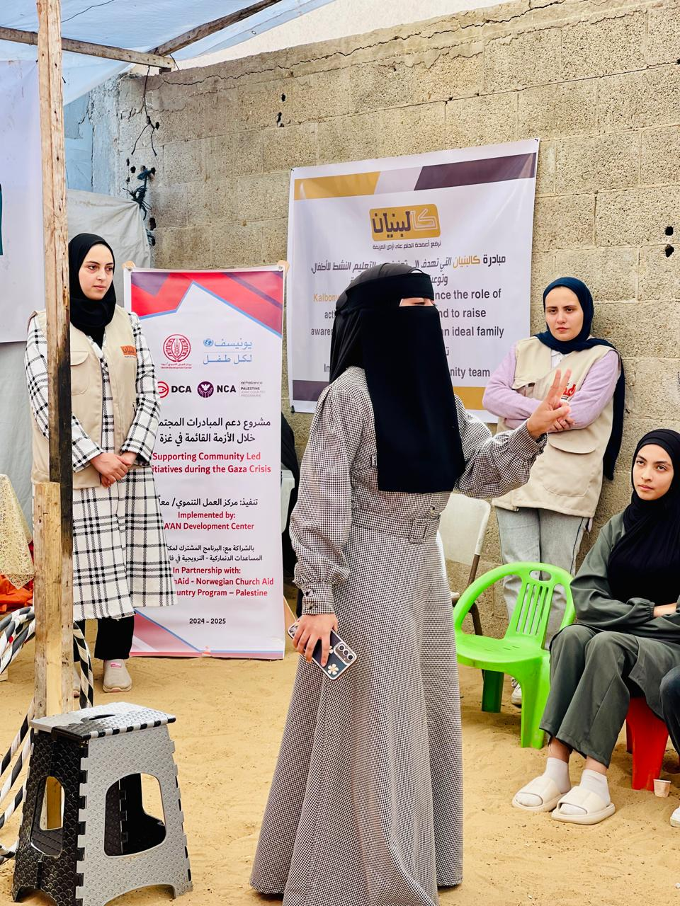

زهرة
أنا زهرة، الأولى على قطاع غزة في التوجيهي ورا هالإنجاز في حكاية صمود مش سهلة كنت أدرس والقصف حواليا، والخوف والقلق ما فارقوني أوقات كثيرة بكيت، حسّيت باليأس، بس حلمي ما تركني، وإيماني بنفسي كان أقوى من كل الحرب والحرمان رغم كل الظروف الاقتصادية الصعبة، ما استسلمت ووصلت لهدفي، وصوت النجاح جوّاتي غلب صوت القصف. كالبنيان آمنت فيّ، وخلّت قصتي توصل، وفتحتلي المجال أشارك تجربتي مع طلاب تانيين يمكن محتاجين أمل. رسالتي لكل حدا بيحاول: من تحت الركام، في حلم... ومن قلب الحرب، بيطلع نور. ما في مستحيل. من تحت الركام، في حلم... ومن قلب الحرب، بيطلع نور. ما في مستحيل.
